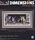
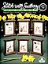

Accessories:
| Pewter Cat Pincushion by - Item #123-2849. Now Only $20.00! |
Kits:
| Regal Tiger (kit) by Dimensions Dramatic profile of a gorgeous tiger designed by Linda Rossin. The complete kit includes 14 ct. Beige Aida, thread sorter, needle, cotton thread, and easy instructions. Finished size is 14" x 11". Item #K35171. |
| All Thumbs (kit) by Bucilla - An adorable cat is cuddled up on his favorite chair in this Sue Ellen Ross design. Complete kit includes 14 Ct. White Aida, floss, needle, floss separators, instructions, and chart. Finished design size is 16.5" x 11.5". Item #K43472. |
|  | Barnyard Kitties (kit) by Dimensions - A collection of curious kittens peek out from their hiding place in the barn! Designed by Deb Bovey. Complete kit includes 14 Ct. Black Aida, thread palette, chart, needle, and easy instructions. Finished design size is 20" x 11". Item #K35133. |
| Brotherly Love (kit) by Brittercup Designs - Includes the adorable chart, Crescent Colours Hand Dyed Floss, Gentle Art Sampler Threads, 28ct. Queen Anne's Lace hand dyed Jobelan, antique gold bow-heart charm and needle. Stitch Count: 76W X 52H. Besides "Brotherly Love", four other options are included to replace the saying - "Best Buddies", "Friends Forever", "Sisterly Love" or "Together Forever". Item #BCD03. Now Only $16.50! |
| Cat Lover (kit) by Candamar Designs - Dedicated to cat lovers everywhere! "Cat Lover - catnip, paws, yarn, furry, cuddly, fish, mouse, stretch, tomcat, furball!" Complete kit includes 14 Ct. White Aida, floss, needle, chart, and easy-to-follow instructions. Finished design size is 8"x10". Item #KCX-51396. |
| Charming Birdwatcher (kit) by Sunset - A curious cat watches through the window as two golden birds play in this charming Martha Edwards design. Complete kit includes 14 Ct. Ivory Aida, thread palette, needle, and easy instructions. Finished design size is 16" x 14". Item #K13676. |
| Four Seasons Kittens (kit) by Dimensions - Celebrate the seasons with Martha Edwards' adorable kittens! Complete kit includes cotton thread, 18 Ct. White Aida, thread sorter, needle and instructions. Finished design size is 15" x 13". Item #K35154. |
| Frederick the Literate (kit) by Dimensions - Wonderful Charles Wysocki design featuring Frederick the Cat curled up on the bookshelf. Complete kit includes 14 Ct. Black Aida, chart, floss, needle, and instructions. Finished design size is 12"x11". Item #K35048. |
| Friends (Learn a Craft Kit) by Dimensions - This beginner's kit features a curious cat looking up at his feathered friend. Complete kit includes 11 Ct white Aida, thread, needle, kid-friendly instructions and a 3" round hoop for stitching and finishing. Item #K72452. |
| Halloween 9 Patch (kit) by Pine Mountain Designs - Stitch the adorable Halloween design, attach the charms, and insert into the pre-finished pillow for a fun holiday treat! Complete kit contains pre-sewn pillow, charms, 16 ct aida, DMC floss, tapestry needle and color pattern. Finished size is approximately 6" x 6". Item #PM920. Now Only $16.95! |
| Halloween Cats Pillow (kit) by Trail Creek Farm - This unique pillow kit comes with everything you need to complete the design: pillow, pillow cover with built in 32 ct hand dyed linen, graph, bow embellishment, needle, and hand dyed cotton floss from Crescent Colours. The pillow is approximately 11" wide, 6.25" high, and 2.5" deep. No finishing required! Just stitch the design, then slip the pillow into the pillow cover. Item #05-2649. |
| Kitty Keepsake Ornaments (kit) by Dimensions - Cute kittens get into all sorts of mischief in this Martha Edwards collection. The designs are stitched on 18 count white Aida with cotton thread. Half cross stitch is used for artistic effect. Kit also includes felt for backing your ornaments. Six ornaments in all with a finished size of 4 1/4" x 5". Item #K8730. |
| Leonardo (kit) by Dimensions - Leonardo is feeling creative today as he is surrounded by his art supplies. The complete kit includes 18 Ct. White Aida, thread sorter, needle, and easy instructions. Designed by Geoffrey Tristram. Finished design size is 14" x 12". Item #K35164. |
 | Maggie the Messmaker (kit) by Dimensions - Charles Wysocki design featuring Maggie the Messmaker! Complete kit includes 18 Ct. Beige Aida, floss, thread palette, needle, and instructions. Finished design size is 14"x12". Item #K3884. |
| Max in the Adirondacks (kit) by Dimensions - It looks like Max had a tiring day at the lake. This adorable Charles Wysocki design features a cute cat surrounded by all sorts of outdoor and fishing gear. Complete kit includes 18 Ct. Beige Aida, thread palette, needle, and instructions. Finished design size is approximately 14"x12". Item #K35088. |
| Miss December Kit (w/pre-printed fabric) - Dyan Allaire by Kustom Krafts - Item #06-2732. |
| Nine Lives (kit) by Dimensions - The perfect design for cat lovers! By Bryan Moon. Complete kit includes 28 Ct. Tan Evenweave fabric, floss, chart, needle, and instructions. Finished design size is 18" x 7". Item #K3762. |
 | Spool Kit-Gone Fishing Cat by Faithwurks - Item #07-1065. |
| Three Bird Watchers (Kit) by Dimensions - A Martha Edwards design featuring three kittens intent on watching the birds outside. Complete kit includes 18 Ct. Ivory Aida, thread, needle, chart, and easy to follow instructions. Approximately design size is "14"x9". Item #K3839. |
| Too Pooped (Kit) by Dimensions - Adorable Charles Wysocki design of one exhausted little cat! Complete kit includes 14 Ct. Ivory Aida, thread palette, needle, and complete instructions. Finished design size is approximately 11"x11". Item #K35087. |
| Veterinarian (kit) by Candamar Designs - The perfect design for the Veterinarian who is always there to care for our beloved pets. Complete kit includes 14 Ct. White Aida, floss, needle, chart, and complete instructions. Finished design size is 8" x 10" Item #KCX-51456. |
| Who's Watching Whom (kit) by Dimensions - Are the cats looking outside at the birds or are the birds watching the cats? Complete kit includes 16 Ct. Dove Grey Aida, thread, needle, chart and instructions. A Jon Van Zyle design. Item #K3887. |
 | You're Not the Boss of Me! (kit) by Janlynn Corporation - You have to love the grin on this funky cat's face as she says "You're Not the Boss of Me!" Complete kit includes 14 Ct. White Aida, 6-strand carded cotton floss, needle, graph and instructions. A Dolly Mama's kit. Item #K019-0442. |
Stamped Cross Stitch Kits:
| Meowsical Trio (stamped kit) by Dimensions Three musical kitties pose on the piano. Complete stamped cross stitch kit includes cotton thread, printed ivory sailcloth, needle, and instructions. Finished design size is 14" x 11". Item #K3225. |
Patterns:
| Britty Kitties VI by Brittercup Designs Includes "Telling Secret", "Gotchya", "Bad Cat", "Yum Yum" and a punchneedle pattern for "Yum Yum." Models stitched over 2 threads on 28 Ct. Queen Anne's Lace Jobelan or 28 Ct. Light Gray Jobelan ("Yum Yum") using Weeks Dye Works (Honeysuckle, Dried Sage, Oak, Onyx, Sky, Scuppernong, Curry, carrot, Hazelnut, Hibiscus). Item #07-1105. |
| Dogs Serve Cats Rule by Stitchopolis Item #07-1201. |
| French Country Cat by JBW Designs Item #07-1173. |
| Friends by Val's Stuff Item #07-1264. |
| Funny Bunny (April) by Calico Crossroads Item #07-1473. |
| Grey Cat by White Willow Stitching Based on the artwork of Melanie Phillips. Model stitched on 14 Ct White Aida with DMC floss. Stitch Count: 118W x 154H. Item #WW19. Now Only $6.50! |
| Leopard by Vickery Collection Item #07-1280. |
| Love by Zweigart Adorable designs that work perfectly with Zweigart's Love Afghan. Includes cuddly cats, animals, and lots of hearts! Color charts. Item #D1678. |
{kind=link}
{kind=link}
| Miss Tabby by Kustom Krafts Miss Tabby looks a bit annoyed that her secret hiding place has been discovered. A Dyan Allaire design adapted to cross stitch from the artwork of Debbie Cook. Model stitched on 14 Ct. Khaki/Taupe Aida with DMC floss. Stitch Count: 196W x 196H. Item #07-1130. |
| Molly by Carriage House Samplings Item #07-1272. |
| Orange Tabby Cat by White Willow Stitching Based on the artwork of Melanie Phillips. Model stitched on 14 Ct Navy Blue Aida with DMC floss. Stitch Count: 89W x 105H. Item #WW18. Now Only $6.50! |
| Quaker Cat And Mouse by Workbasket Item #07-1247. |
| Spring And Summer by Val's Stuff Item #07-1267. |
| Spring Quilt by Imaginating Item #07-1135. |
| Spring Time by Imaginating Two black cats and one adorable mouse admire the Spring flowers. The model was stitched on 14 Ct. White Aida with DMC floss. Stitch Count: 69H x 132W. Item #07-1470. |
| St Patty Kat (March) by Calico Crossroads Item #07-1472. |
| Summer Quilt by Imaginating A black cat admires a strawberry and vine covered quilt in this Pamela Kellogg design. The model was stitched on 14 Ct. White Aida with DMC floss. Stitch Count: 96W x 111H. Item #07-1459. |
| Welcome Friends by Val's Stuff Item #07-1160. |
|  | #16 Clocks by Sudberry House - Item #3009. |
| #39 Bezel Designs III by Sudberry House - Item #3030. |
| #42 Bezels IV by Sudberry House - Item #3174. |